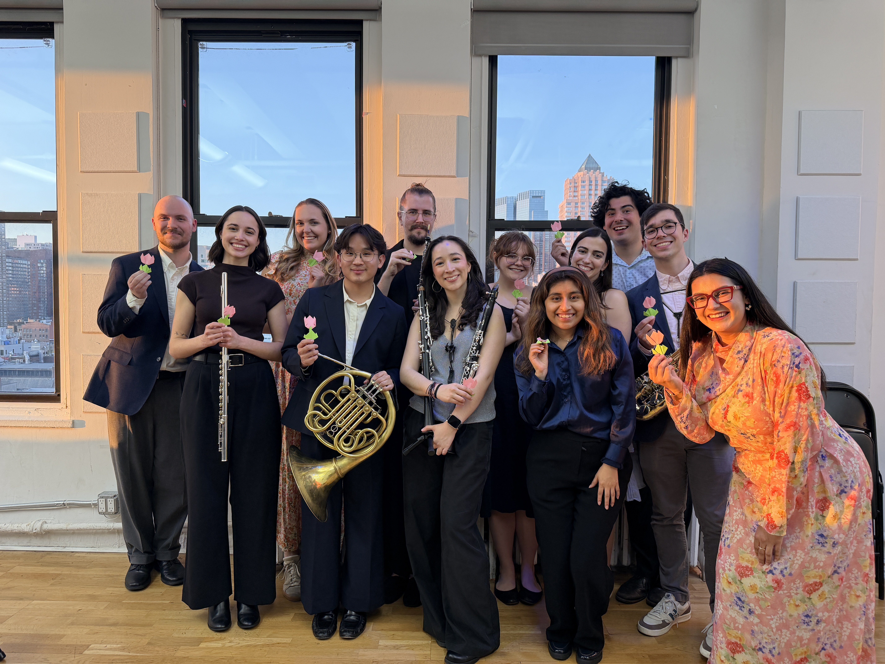
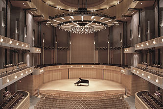

Music is a language in itself, and in it we find our acts of resistance.
Who We Are
Musicians for Progress is a 501(c)(3) New York based nonprofit organization dedicated to creating lasting social impacts through classical and contemporary music, and providing artists with a platform to engage with social change.


Our Focus
Musicians for Progress provides and creates events that are informative and inspire conversation, positive action, and social change, allowing music to act as a collective voice and call to action. We take an interdisciplinary approach to the arts, and strongly believe in the importance of interdisciplinary collaboration. We believe in creating accessibility within the arts, and the vision for this organization is built around creating platforms for less-established and/or growing artists.
Our Beliefs
We define progress as an effort to create equality and equity to better both the world and the lives of the people in it. We are passionately pro-LGBTQ, pro-choice, and pro-immigration. We believe in progress as a pursuit of justice, freedom of education and information, and the right to healthcare, financial security, and housing. We believe that no one is illegal on stolen land, and recognize that the land we occupy belongs to indigenous groups.

Our Team
-
Bryce Cox
Founder / Executive Director
-
Ian Briffa
Artistic Director
-
Honor Hickman
Events/Outreach Coordinator
-

Sadie Habas
Board Member